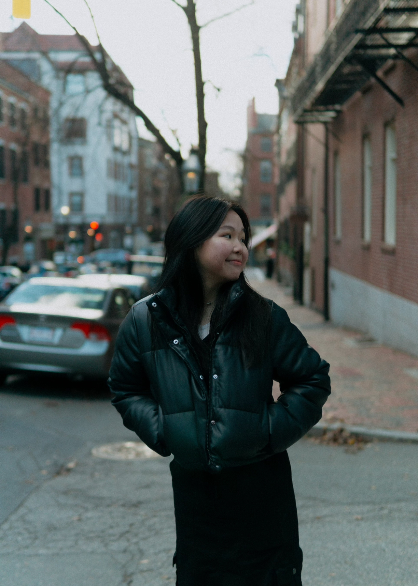

More About Me and My Interests
Prior College, I wanted to explore my interests as much as I can, so I took the initiative to intern at the American repertory theater for a summer, where I facilitated and promoted pre-show events along with four other youth action team members. However, my passion for my major really grew due to the opportunity I had to participate at a Data Analytics Summer Camp, at Suffolk University. I was given the opportunity to learn Complex Excel, as well as exercising my analytics skills. Wanting to dive deeper into my passion, I started my college journey majoring in both Business Administration and Data Science. Additionally, I am involved in the Skills Development cohort of Women in Finance at Northeastern University, a student-lead cohort where upperclassmen come in and teach their technicals and soft skills to the members (e.g., how to read balance sheets). I am also involved in the Webuild cohort of WISE, Women's Interdisciplinary Society of Entrepreneurship at Northeastern University.

With the focus on personal growth early on, I picked up boxing. Taking regular visits to the gym, I invested the second half of my high school years into the sport. At the same time, I grew an interest for true crime documentaries. Some of my favorite true crime podcasts include: Stephanie Soo. While I stopped membership for boxing since college started, I continue to practice occasionally on my own. Additionally, I kept myself busy playing seasonal sports with friends; winter is my favorite season for this reason. Finally, for the longest time, I've always love music. Have you heard of Jennie from Blackpink? She just dropped a new album!
Jennie's New Album:
- Check it out! Ruby